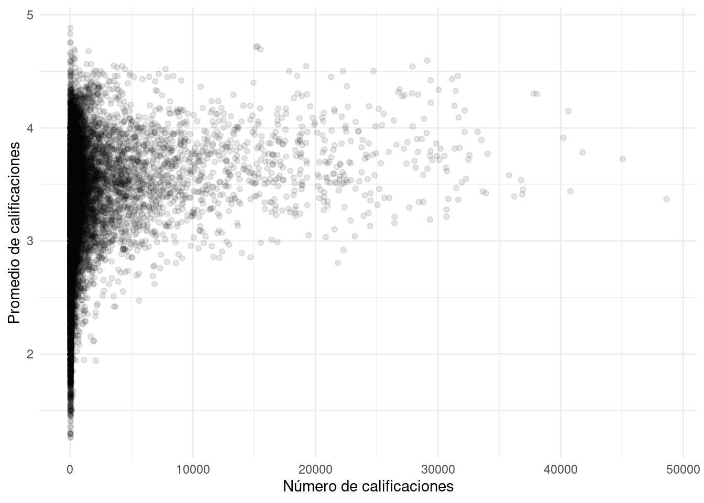
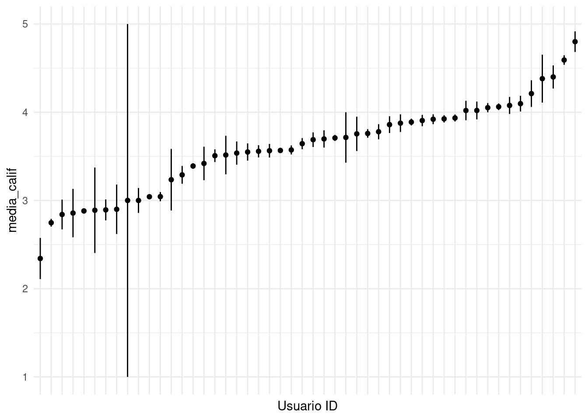
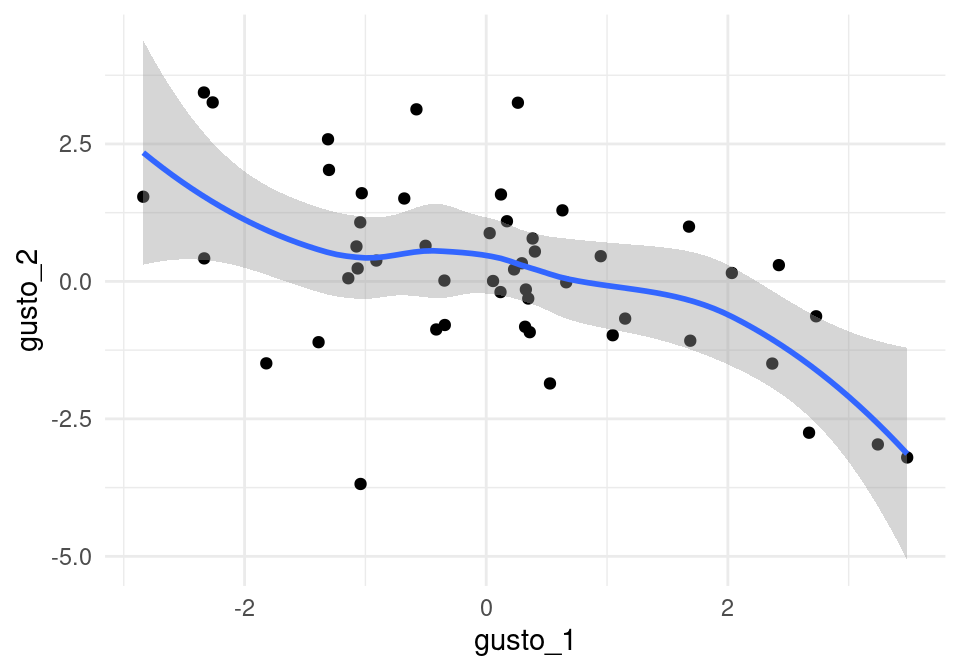
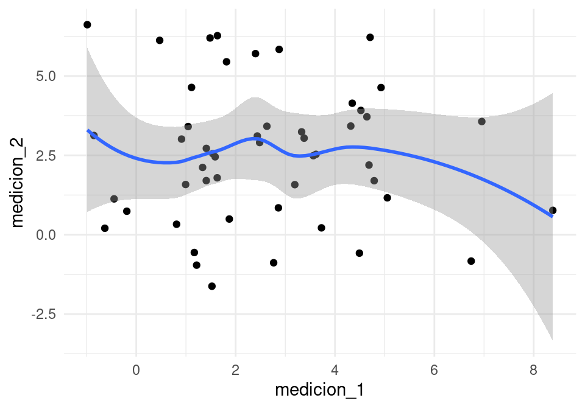
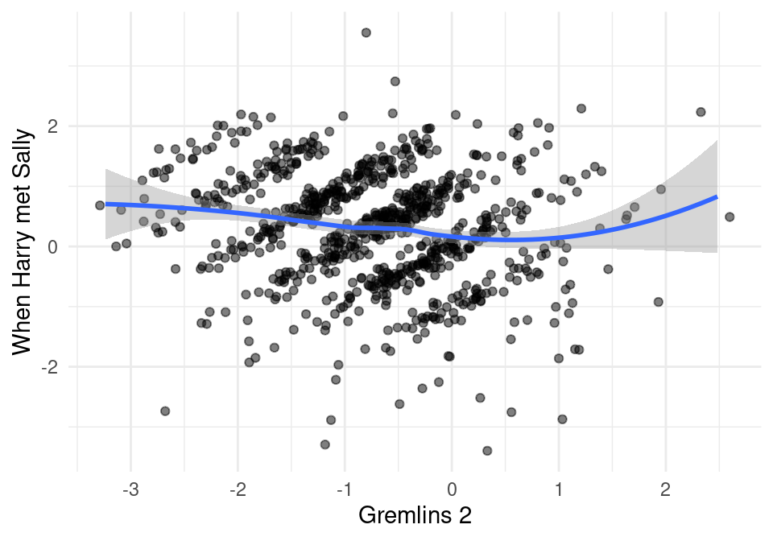

5 Sistemas de recomendación y filtrado colaborativo
En esta sección discutiremos métodos que se pueden utilizar para hacer recomendaciones de documentos, películas, artículos, etc. a personas según sus intereses.
- Problema: predecir la respuesta de personas a estímulos a los que no han sido expuestos, basados en respuesta a otros estímulos de esta y quizá otras personas similares.
Por ejemplo, si consideramos usuarios de Netflix: ¿qué tanto le puede gustar a X la película Y? Usuarios de Amazon: ¿qué tan probable es que compren Z artículo si se les ofrece?
5.1 Enfoques de recomendación
Hay varios enfoques que podemos utilizar para atacar este problema:
- Principalmente basados en contenido: En función de características de los estímulos, productos o películas (por ejemplo, género, actores, país de origen, año, etc.) intentamos predecir el gusto por el estímulo. En este enfoque, construimos variables derivadas del contenido de los artículos (por ejemplo: qué actores salen, año, etc. o en textos palabras que aparecen), e intentamos predecir el gusto a partir de esas características.
Ejemplo: Si mu gustó Twilight entonces el sistema recomienda otros dramas+vampiros (” por ejemplo “Entrevista con un vampiro”).
- Principalmente colaborativos: utilizamos gustos o intereses de usuarios/artículos similares — en el sentido de que les han gustado los mismos artículos/les gustaron a las mismas personas.
Ejemplo: Me gustó StarWars y Harry Potter, varios otros usuarios a los que también les gustaron estas dos películas también les gustó “Señor de los anillos,” así que recomendamos “Señor de los Anillos.” Entre estos métodos, veremos principalmente métodos basados en reducción de dimensionalidad o modelos de factores latentes: encontrar factores latentes que describan usuarios y películas, y predecimos dependiendo de los niveles de factores latentes de personas y películas.
5.2 Datos
Los datos utilizados para este tipo de sistemas son de dos tipos:
Ratings explícitos dados por los usuarios (por ejemplo, Netflix mucho tiempo fue así: \(1-5\) estrellas)
Ratings implícitos que se derivan de la actividad de los usuarios (por ejemplo, vio la película completa, dio click en la descripción de un producto, etc.).
Ejemplo
Consideramos evaluaciones en escala de gusto: por ejemplo \(1-5\) estrellas, o \(1\)-me disgustó mucho, \(5\)-me gustó mucho, etc.
Podemos representar las evaluaciones como una matriz:
| SWars1 | SWars4 | SWars5 | HPotter1 | HPotter2 | Twilight | |
|---|---|---|---|---|---|---|
| a | 3 | 5 | 5 | 2 | - | - |
| b | 3 | - | 4 | - | - | - |
| c | - | - | - | 5 | 4 | - |
| d | 1 | - | 2 | - | 5 | 4 |
Y lo que queremos hacer es predecir los valores faltantes de esta matriz, y seleccionar para cada usuario los artículos con predicción más alta, por ejemplo
| SWars1 | SWars4 | SWars5 | HPotter1 | HPotter2 | Twilight | |
|---|---|---|---|---|---|---|
| a | 3 | 5 | 5 | 2 | 2.5 | 4.8 |
| b | 3 | 4.9 | 4 | 3.8 | 1.7 | 4.6 |
| c | 4.1 | 2.2 | 3.4 | 5 | 4 | 4.6 |
| d | 1 | 4.6 | 2 | 3 | 5 | 4 |
Podemos pensar en este problema como uno de imputación de datos faltantes. Las dificultades particulares de este problema son:
- Datos ralos: cada usuario sólo ha visto y calificado una proporción baja de películas, y hay películas con pocas vistas.
- Escalabilidad: el número de películas y usuarios es generalmente grande
Por estas razones, típicamente no es posible usar técnicas estadísticas de imputación de datos (como imputación estocástica basada en regresión)
- Usaremos mejor métodos más simples basados en similitud entre usuarios y películas y descomposición de matrices.
5.3 Modelos de referencia y evaluación
Vamos a comenzar considerando modelos muy simples. El primero que se nos puede ocurrir es uno de homogeneidad de gustos: para una persona \(i\), nuestra predicción de su gusto por la película \(j\) es simplemente la media de la película \(j\) sobre todos los usuarios que la han visto.
Este sería un buen modelo si los gustos fueran muy parecidos sobre todos los usuarios. Esta sería una recomendación de “artículos populares.”
Introducimos la siguente notación:
- \(x_{ij}\) es la evaluación del usuario \(i\) de la película \(j\). Obsérvese que muchos de estos valores no son observados (no tenemos información de varias \(x_{ij}\)).
- \(\hat{x}_{ij}\) es la predicción que hacemos de gusto del usuario \(i\) por la película \(j\)
En nuestro primer modelo simple, nuestra predicción es simplemente \[\hat{x}_{ij} = \hat{b}_j\] donde \[\hat{b_j} = \frac{1}{N_j}\sum_{s} x_{sj},\] y este promedio es sobre los \(N_j\) usuarios que vieron (y calificaron) la película \(j\).
¿Cómo evaluamos nuestras predicciones?
5.3.1 Evaluación de predicciones
Usamos muestras de entrenamiento y validación. Como en el concurso de Netflix, utilizaremos la raíz del error cuadrático medio:
\[RECM =\left ( \frac{1}{T} \sum_{(i,j) \, observada} (x_{ij}-\hat{x}_{ij})^2 \right)^{\frac{1}{2}}\]
aunque también podríamos utilizar la desviación absoluta media:
\[DAM =\frac{1}{T} \sum_{(i,j) \, observada} |x_{ij}-\hat{x}_{ij}|\]
- Nótese que estas dos cantidades se evaluán sólo sobre los pares \((i,j)\) para los que tengamos una observación \(x_{ij}\).
Observaciones:
Generalmente evaluamos sobre un conjunto de validación separado del conjunto de entrenamiento.
Escogemos una muestra de películas, una muestra de usuarios, y ponemos en validación el conjunto de calificaciones de esos usuarios para esas películas.
Para hacer un conjunto de prueba, idealmente los datos deben ser de películas que hayan sido observadas por los usuarios en el futuro (después del periodo de los datos de entrenamiento).
Nótese que no seleccionamos todas las evaluaciones de un usuario, ni todas las evaluaciones de una película. Con estas estrategias, veríamos qué pasa con nuestro modelo cuando tenemos una película que no se ha visto o un usuario nuevo. Lo que queremos ententer es cómo se desempeña nuestro sistema cuando tenemos cierta información de usuarios y de películas.
Ejemplo: datos de Netflix
Los datos del concurso de Netflix originalmente vienen en archivos de texto, un archivo por película.
The movie rating files contain over \(100\) million ratings from \(480\) thousand randomly-chosen, anonymous Netflix customers over \(17\) thousand movie titles. The data were collected between October, \(1998\) and December, \(2005\) and reflect the distribution of all ratings received during this period. The ratings are on a scale from \(1\) to \(5\) (integral) stars. To protect customer privacy, each customer id has been replaced with a randomly-assigned id. The date of each rating and the title and year of release for each movie id are also provided.
The file “training_set.tar” is a tar of a directory containing \(17770\) files, one per movie. The first line of each file contains the movie id followed by a colon. Each subsequent line in the file corresponds to a rating from a customer and its date in the following format:
CustomerID,Rating,Date
- MovieIDs range from \(1\) to \(17770\) sequentially.
- CustomerIDs range from \(1\) to \(2649429\), with gaps. There are \(480189\) users.
- Ratings are on a five star (integral) scale from \(1\) to \(5\).
- Dates have the format YYYY-MM-DD.
En primer lugar haremos un análisis exploratorio de los datos para entender algunas de sus características, ajustamos el modelo simple de gustos homogéneos (la predicción es el promedio de calificaciones de cada película), y lo evaluamos.
Comenzamos por cargar los datos:
library(tidyverse)
theme_set(theme_minimal())
cb_palette <- c("#000000", "#E69F00", "#56B4E9", "#009E73", "#F0E442", "#0072B2", "#D55E00", "#CC79A7")# url <- "https://s3.amazonaws.com/ma-netflix/dat_muestra_nflix.csv"
pelis_nombres <- read_csv('../datos/netflix/movies_title_fix.csv', col_names = FALSE, na = c("", "NA", "NULL"))## Rows: 17770 Columns: 3## ── Column specification ────────────────────────────────────────────────────────
## Delimiter: ","
## chr (1): X3
## dbl (2): X1, X2##
## ℹ Use `spec()` to retrieve the full column specification for this data.
## ℹ Specify the column types or set `show_col_types = FALSE` to quiet this message.names(pelis_nombres) <- c('peli_id','año','nombre')
dat_netflix <- read_csv( "../datos/netflix/dat_muestra_nflix.csv", progress = FALSE) |>
select(-usuario_id_orig) |>
mutate(usuario_id = as.integer(as.factor(usuario_id)))## Rows: 20968941 Columns: 5## ── Column specification ────────────────────────────────────────────────────────
## Delimiter: ","
## dbl (4): peli_id, usuario_id_orig, calif, usuario_id
## date (1): fecha##
## ℹ Use `spec()` to retrieve the full column specification for this data.
## ℹ Specify the column types or set `show_col_types = FALSE` to quiet this message.head(dat_netflix)## # A tibble: 6 × 4
## peli_id calif fecha usuario_id
## <dbl> <dbl> <date> <int>
## 1 1 3 2004-04-14 1
## 2 1 3 2004-12-28 2
## 3 1 4 2004-04-06 3
## 4 1 4 2004-03-07 4
## 5 1 4 2004-03-29 5
## 6 1 2 2004-07-11 6dat_netflix |> tally()## # A tibble: 1 × 1
## n
## <int>
## 1 20968941Y ahora calculamos las medias de cada película.
medias_pelis <- dat_netflix |> group_by(peli_id) |>
summarise(media_peli = mean(calif), num_calif_peli = n())
medias_pelis <- left_join(medias_pelis, pelis_nombres)## Joining, by = "peli_id"arrange(medias_pelis, desc(media_peli)) |>
top_n(200, media_peli) |>
mutate(media_peli = round(media_peli, 2)) |>
DT::datatable()Nótese que varias de las películas con mejor promedio tienen muy pocas evaluaciones. Podemos examinar más detalladamente graficando número de evaluaciones vs promedio:
ggplot(medias_pelis, aes(x=num_calif_peli, y=media_peli)) +
geom_point(alpha = 0.1) + xlab("Número de calificaciones") +
ylab("Promedio de calificaciones") 
Y vemos que hay más variabilidad en los promedios cuando hay menos evaluaciones, como es de esperarse. ¿Puedes ver algún problema que tendremos que enfrentar con el modelo simple?
Si filtramos por número de calificaciones (al menos \(500\) por ejemplo), estas son las películas mejor calificadas (la mayoría conocidas y populares):
arrange(medias_pelis, desc(media_peli)) |>
filter(num_calif_peli > 500) |>
top_n(200, media_peli) |>
mutate(media_peli = round(media_peli, 2)) |>
DT::datatable()Ahora seleccionamos nuestra muestra de entrenamiento y de validación. Seleccionamos una muestra de usuarios y de películas:
set.seed(28882)
usuarios <- dat_netflix |> select(usuario_id) |> distinct()
valida_usuarios <- usuarios |> sample_frac(0.2)
peliculas <- dat_netflix |> select(peli_id) |> distinct()
valida_pelis <- peliculas |> sample_frac(0.2)Y separamos calificaciones de entrenamiento y validación:
dat_valida <- dat_netflix |>
semi_join(valida_usuarios) |>
semi_join(valida_pelis) ## Joining, by = "usuario_id"## Joining, by = "peli_id"dat_entrena <- dat_netflix |>
anti_join(dat_valida)## Joining, by = c("peli_id", "calif", "fecha", "usuario_id")n_valida <- dat_valida |> tally() |> pull(n)
n_entrena <- dat_entrena |> tally() |> pull(n)
sprintf("Entrenamiento: %1d, Validación: %2d, Total: %3d", n_entrena,
n_valida, n_entrena + n_valida)## [1] "Entrenamiento: 20191991, Validación: 776950, Total: 20968941"Ahora construimos predicciones con el modelo simple de arriba y evaluamos con validación:
medias_pred <- dat_entrena |> group_by(peli_id) |>
summarise(media_pred = mean(calif))
media_total_e <- dat_entrena |> ungroup() |> summarise(media = mean(calif)) |> pull(media)
dat_valida_pred <- dat_valida |> left_join(medias_pred |> collect())
head(dat_valida_pred)## # A tibble: 6 × 5
## peli_id calif fecha usuario_id media_pred
## <dbl> <dbl> <date> <int> <dbl>
## 1 2 5 2005-07-18 116 3.64
## 2 2 4 2005-06-07 126 3.64
## 3 2 4 2005-07-30 129 3.64
## 4 2 1 2005-09-07 131 3.64
## 5 2 1 2005-02-13 103 3.64
## 6 8 1 2005-03-21 1007 3.19Nota que puede ser que algunas películas seleccionadas en validación no tengan evaluaciones en entrenamiento:
table(is.na(dat_valida_pred$media_pred))##
## FALSE
## 776950dat_valida_pred <- mutate(dat_valida_pred,
media_pred = ifelse(is.na(media_pred), media_total_e, media_pred))No sucede en este ejemplo, pero si sucediera podríamos usar el promedio general de las predicciones. Evaluamos ahora el error:
recm <- function(calif, pred){
sqrt(mean((calif - pred)^2))
}
error <- dat_valida_pred |> ungroup() |>
summarise(error = mean((calif - media_pred)^2))
error## # A tibble: 1 × 1
## error
## <dbl>
## 1 1.03Este error está en las mismas unidades de las calificaciones (estrellas en este caso).
Antes de seguir con nuestra refinación del modelo, veremos algunas observaciones acerca del uso de escala en análisis de datos:
Cuando tratamos con datos en escala encontramos un problema técnico que es el uso distinto de la escala por los usuarios, muchas veces independientemente de sus gustos
Veamos los datos de Netflix para una muestra de usuarios:
# muestra de usuarios
entrena_usu <- sample(unique(dat_entrena$usuario_id), 50)
muestra_graf <- filter(dat_entrena, usuario_id %in% entrena_usu)
# medias generales por usuario, ee de la media
muestra_res <- muestra_graf |> group_by(usuario_id) |>
summarise(media_calif = mean(calif),
sd_calif = sd(calif)/sqrt(length(calif)))
muestra_res$usuario_id <- reorder(factor(muestra_res$usuario_id), muestra_res$media_calif)
ggplot(muestra_res, aes(x=factor(usuario_id), y = media_calif,
ymin = media_calif - sd_calif, ymax = media_calif + sd_calif)) +
geom_linerange() + geom_point() + xlab('Usuario ID') +
theme(axis.text.x=element_blank())
Y notamos que hay unos usuarios que tienen promedios por encima de \(4.5\), mientras que otros califican por debajo de \(3\) en promedio. Aunque esto puede deberse a las películas que han visto, generalmente una componente de esta variabilidad se debe a cómo usa la escala cada usuario.
- En primer lugar, quizá uno podría pensar que un modelo base consiste de simplemente predecir el promedio de una película sobre todos los usuarios que la calificaron (sin incluir el sesgo de cada persona). Esto no funciona bien porque típicamente hay distintos patrones de uso de la escala de calificación, que depende más de forma de uso de escala que de la calidad de los items.
Hay personas que son:
- Barcos: \(5\),\(5\),\(5\),\(4\),\(4\),\(5\)
- Estrictos: \(2\),\(3\),\(3\),\(1\),\(1\),\(2\)
- No se compromete: \(3\),\(3\),\(3\),\(3\),\(4\)
- Discrimina: \(5\),\(4\),\(5\),\(1\),\(2\),\(4\)
El estilo de uso de las escalas varía por persona. Puede estar asociado a aspectos culturales (países diferentes usan escalas de manera diferente), quizá también de personalidad, y a la forma de obtener las evaluaciones (cara a cara, por teléfono, internet).
Lo primero que vamos a hacer para controlar esta fuente de variación es ajustar las predicciones dependiendo del promedio de calificaciones de cada usuario.
5.3.2 (Opcional) Efectos en análisis de heterogeneidad en uso de escala
Muchas veces se considera que tratar como numéricos a calificaciones en escala no es muy apropiado, y que el análisis no tiene por qué funcionar pues en realidad las calificaciones están en una escala ordinal. Sin embargo,
La razón principal por las que análisis de datos en escala es difícil no es que usemos valores numéricos para los puntos de la escala. Si esto fuera cierto, entonces por ejemplo, transformar una variable con logaritmo también sería “malo.”
La razón de la dificultad es que generalmente tenemos que lidiar con la heterogeneidad en uso de la escala antes de poder obtener resultados útiles de nuestro análisis.
Supongamos que \(X_1\) y \(X_2\) son evaluaciones de dos películas. Por la discusión de arriba, podríamos escribir
\[X_1 = N +S_1,\] \[X_2 = N + S_2,\]
donde \(S_1\) y \(S_2\) representan el gusto por la película, y \(N\) representa el nivel general de calificaciones. Consideramos que son variables aleatorias (\(N\) varía con las personas, igual que \(S_1\) y \(S_2\)).
Podemos calcular
\[Cov(X_1,X_2)\]
para estimar el grado de correlación de gusto por las dos películas, como si fueran variables numéricas. Esta no es muy buena idea, pero no tanto porque se trate de variables ordinales, sino porque en realidad quisiéramos calcular:
\[Cov(S_1, S_2)\]
que realmente representa la asociación entre el gusto por las dos películas. El problema es que \(S_1\) y \(S_2\) son variables que no observamos.
¿Cómo se relacionan estas dos covarianzas?
\[Cov(X_1,X_2)=Cov(N,N) + Cov(S_1,S_2) + Cov(N, S_2)+Cov(N,S_1)\]
Tenemos que \(Cov(N,N)=Var(N)=\sigma_N ^2\), y suponiendo que el gusto no está correlacionado con los niveles generales de respuesta, \(Cov(N_1, S_2)=0=Cov(N_2,S_1)\), de modo que
\[Cov(X_1,X_2)= Cov(S_1,S_2) + \sigma_N^2.\]
donde \(\sigma_N^2\) no tiene qué ver nada con el gusto por las películas.
De forma que al usar estimaciones de \(Cov(X_1,X_2)\) para estimar \(Cov(S_1,S_2)\) puede ser mala idea porque el sesgo hacia arriba puede ser alto, especialmente si la gente varía mucho es un sus niveles generales de calificaciones (hay muy barcos y muy estrictos).
5.3.3 Ejemplo
Los niveles generales de \(50\) personas:
set.seed(128)
n <- 50
niveles <- tibble(persona = 1:n, nivel = rnorm(n,2))Ahora generamos los gustos (latentes) por dos artículos, que suponemos con correlación negativa:
x <- rnorm(n)
gustos <- tibble(persona=1:n, gusto_1 = x + rnorm(n),
gusto_2 = -x + rnorm(n))
head(gustos,3)## # A tibble: 3 × 3
## persona gusto_1 gusto_2
## <int> <dbl> <dbl>
## 1 1 0.948 0.459
## 2 2 1.15 -0.676
## 3 3 -1.31 2.58cor(gustos[,2:3])## gusto_1 gusto_2
## gusto_1 1.0000000 -0.5136434
## gusto_2 -0.5136434 1.0000000Estos dos items tienen gusto correlacionado negativamente:
ggplot(gustos, aes(x=gusto_1, y=gusto_2)) + geom_point() +
geom_smooth()## `geom_smooth()` using method = 'loess' and formula 'y ~ x'
Pero las mediciones no están correlacionadas:
medicion_1 <- niveles$nivel + gustos$gusto_1+rnorm(n,0.3)
medicion_2 <- niveles$nivel + gustos$gusto_2+rnorm(n,0.3)
mediciones <- tibble(persona = 1:n, medicion_1, medicion_2)
cor(mediciones[,2:3])## medicion_1 medicion_2
## medicion_1 1.00000000 -0.05825995
## medicion_2 -0.05825995 1.00000000Así que aún cuando el gusto por \(1\) y \(2\) están correlacionadas negativamente, las mediciones de gusto no están correlacionadas.
ggplot(mediciones, aes(x=medicion_1, y=medicion_2)) +
geom_point() + geom_smooth()## `geom_smooth()` using method = 'loess' and formula 'y ~ x'
Observaciones: Un modelado más cuidadoso de este tipo de datos requiere más trabajo. Pero para el trabajo usual, generalmente intentamos controlar parte de la heterogeneidad centrando las calificaciones por usuario. Es decir, a cada calificación de una persona le restamos la media de sus calificaciones, que es una estimación del nivel general \(N\). Esta idea funciona si \(k\) no es muy chico.
Si el número de calificaciones por persona (\(k\)) es chico, entonces tenemos los siguientes problemas:
El promedio de evaluaciones es una estimación ruidosa del nivel general.
Podemos terminar con el problema opuesto: nótese que si \(X_1,\ldots, X_k\) son mediciones de gusto distintos items, entonces \[Cov(X_1-\bar{X}, X_2-\bar{X})=Cov(S_1-\bar{S},S_2-\bar{S}),\] \[=Cov(S_1,S_2)-Cov(S_1,\bar{S})-Cov(S_2,\bar{S}) + Var(\bar{S})\]
Si \(k\) es chica, suponiendo que los gustos no están correlacionados, los términos intermedios puede tener valor negativo relativamente grande ( es de orden \(\frac{1}{k}\)), aún cuando el último término sea chico (de orden \(\frac{1}{k^2}\))
Así que ahora las correlaciones estimadas pueden tener sesgo hacia abajo, especialmente si \(k\) es chica.
Más avanzado, enfoque bayesiano: https://www.jstor.org/stable/2670337
5.4 Modelo de referencia
Ahora podemos plantear el modelo base de referencia. Este modelo es útil para hacer benchmarking de intentos de predicción, como primera pieza para construcción de modelos más complejos, y también como una manera simple de producir estimaciones cuando no hay datos suficientes para hacer otro tipo de predicción.
Usualmente ponemos:
- Media general \[\hat{\mu} =\frac{1}{T}\sum_{s,t} x_{s,t}\]
- Promedio de calificaciones de usuario \(i\) \[\hat{a}_i =\frac{1}{M_i}\sum_{t} x_{i,t} \]
- Promedio de calificaciones de la película \(j\) \[\hat{b}_j =\frac{1}{N_j}\sum_{s} x_{s,j}\]
También podemos escribir, en términos de desviaciones:
\[\hat{x}_{ij} = \hat{\mu} + \hat{c}_i + \hat{d}_j \] donde:
- Media general \[\hat{\mu} =\frac{1}{T}\sum_{s,t} x_{st}\]
- Desviación de las calificaciones de usuario \(i\) respecto a la media general \[\hat{c}_i =\frac{1}{M_i}\sum_{t} x_{it} - \hat{\mu} \]
- Desviación de la película \(j\) respecto a la media general \[\hat{d_j} =\frac{1}{N_j}\sum_{s} x_{sj}- \hat{\mu}\]
Una vez que observamos una calificación \(x_{ij}\), el residual del modelo de referencia es \[r_{ij} = x_{ij} - \hat{x_{ij}}\]
Ejercicio: modelo de referencia para Netflix
Calculamos media de películas, usuarios y total:
medias_usuarios <- dat_entrena |>
group_by(usuario_id) |>
summarise(media_usu = mean(calif), num_calif_usu = length(calif)) |>
select(usuario_id, media_usu, num_calif_usu)
medias_peliculas <- dat_entrena |>
group_by(peli_id) |>
summarise(media_peli = mean(calif), num_calif_peli = length(calif)) |>
select(peli_id, media_peli, num_calif_peli)
media_total_e <- mean(dat_entrena$calif)Y construimos las predicciones para el conjunto de validación
dat_valida <- dat_valida |>
left_join(medias_usuarios) |>
left_join(medias_peliculas) |>
mutate(media_total = media_total_e) |>
mutate(pred = media_peli + (media_usu - media_total)) |>
mutate(pred = ifelse(is.na(pred), media_total, pred))## Joining, by = "usuario_id"## Joining, by = "peli_id"Nótese que cuando no tenemos predicción bajo este modelo para una combinación de usuario/película, usamos el promedio general (por ejemplo).
Finalmente evaluamos
dat_valida |> ungroup() |> summarise(error = recm(calif, pred))## # A tibble: 1 × 1
## error
## <dbl>
## 1 0.929Observación: ¿Qué tan bueno es este resultado? De wikipedia:
Prizes were based on improvement over Netflix’s own algorithm, called Cinematch, or the previous year’s score if a team has made improvement beyond a certain threshold. A trivial algorithm that predicts for each movie in the quiz set its average grade from the training data produces an RMSE of \(1.0540\). Cinematch uses “straightforward statistical linear models with a lot of data conditioning.”
Using only the training data, Cinematch scores an RMSE of \(0.9514\) on the quiz data, roughly a 10% improvement over the trivial algorithm. Cinematch has a similar performance on the test set, \(0.9525\). In order to win the grand prize of \(1,000,000\), a participating team had to improve this by another \(10%\), to achieve \(0.8572\) on the test set. Such an improvement on the quiz set corresponds to an RMSE of \(0.8563\). Aunque nótese que estrictamente hablando no podemos comparar nuestros resultados con estos números, en los que se usa una muestra de prueba separada de películas vistas despúes del periodo de entrenamiento.
5.5 Filtrado colaborativo: similitud
Además de usar promedios generales por película, podemos utilizar similitud de películas/personas para ajustar predicciones según los gustos de artículos o películas similares. Este es el enfoque más simple del filtrado colaborativo.
Comencemos entonces con la siguiente idea: Supongamos que queremos hacer una predicción para el usuario \(i\) en la película \(j\), que no ha visto. Si tenemos una medida de similitud entre películas, podríamos buscar películas similares a \(j\) que haya visto \(i\), y ajustar la predicción según la calificación de estas películas similares.
Tomamos entonces nuestra predicción base, que le llamamos \(x_{ij}^0\) y hacemos una nueva predicción:
\[\hat{x}_{ij} = x_{ij}^0 + \frac{1}{k}\sum_{t \in N(i,j)} (x_{it} - x_{it}^0 )\]
donde \(N(i,j)\) son películas similares a \(j\) que haya visto \(i\). Ajustamos \(x_{ij}^0\) por el gusto promedio de películas similares a \(j\), a partir de las predicciones base. Esto quiere decir que si las películas similares a \(j\) están evaluadas por encima del esperado para el usuario \(i\), entonces subimos la predicción, y bajamos la predicción cuando las películas similares están evaluadas por debajo de lo esperado.
Nótese que estamos ajustando por los residuales del modelo base. Podemos también utilizar un ponderado por gusto según similitud: si la similitud entre las películas \(j\) y \(t\) es \(s_{jt}\), entonces podemos usar
\[\begin{equation} \hat{x}_{ij} = x_{ij}^0 + \frac{\sum_{t \in N(i,j)} s_{jt}(x_{it} - x_{it}^0 )}{\sum_{t \in N(i,j)} s_{jt}} \tag{5.1} \end{equation}\]
Cuando no tenemos películas similares que hayan sido calificadas por nuestro usuario, entonces usamos simplemente la predicción base.
5.5.1 Cálculo de similitud entre usuarios/películas
Proponemos utilizar la distancia coseno de las calificaciones centradas por usuario. Como discutimos arriba, antes de calcular similitud conviene centrar las calificaciones por usuario para eliminar parte de la heterogeneidad en el uso de la escala.
Ejemplo
| SWars1 | SWars4 | SWars5 | HPotter1 | HPotter2 | Twilight | |
|---|---|---|---|---|---|---|
| a | 5 | 5 | 5 | 2 | NA | NA |
| b | 3 | NA | 4 | NA | NA | NA |
| c | NA | NA | NA | 5 | 4 | NA |
| d | 1 | NA | 2 | NA | 5 | 4 |
| e | 4 | 5 | NA | NA | NA | 2 |
Calculamos medias por usuarios y centramos:
apply(mat.cons,1, mean, na.rm=TRUE)## a b c d e
## 4.250000 3.500000 4.500000 3.000000 3.666667mat.c <- mat.cons - apply(mat.cons,1, mean, na.rm=TRUE)
knitr::kable(mat.c, digits = 2)| SWars1 | SWars4 | SWars5 | HPotter1 | HPotter2 | Twilight | |
|---|---|---|---|---|---|---|
| a | 0.75 | 0.75 | 0.75 | -2.25 | NA | NA |
| b | -0.50 | NA | 0.50 | NA | NA | NA |
| c | NA | NA | NA | 0.50 | -0.5 | NA |
| d | -2.00 | NA | -1.00 | NA | 2.0 | 1.00 |
| e | 0.33 | 1.33 | NA | NA | NA | -1.67 |
Y calculamos similitud coseno entre películas, suponiendo que las películas no evaluadas tienen calificación \(0\):
sim_cos <- function(x,y){
sum(x*y, na.rm = T)/(sqrt(sum(x^2, na.rm = T))*sqrt(sum(y^2, na.rm = T)))
}
mat.c[,1]## a b c d e
## 0.7500000 -0.5000000 NA -2.0000000 0.3333333mat.c[,2]## a b c d e
## 0.750000 NA NA NA 1.333333sim_cos(mat.c[,1], mat.c[,2])## [1] 0.2966402sim_cos(mat.c[,1], mat.c[,6])## [1] -0.5925503Observación:
Hacer este supuesto de valores \(0\) cuando no tenemos evaluación no es lo mejor, pero como centramos por usuario tiene más sentido hacerlo. Si utilizaramos las calificaciones no centradas, entonces estaríamos suponiendo que las no evaluadas están calificadas muy mal (\(0\), por abajo de \(1\),\(2\),\(3\),\(4\),\(5\)).
Si calculamos similitud entre usuarios de esta forma, las distancia coseno es simplemente el coeficiente de correlación. Nótese que estamos calculando similitud entre items, centrando por usuario, y esto no es lo mismo que correlación entre columnas.
Ejemplo: ¿cómo se ven las calificaciones de películas similares/no similares?
Centramos las calificaciones por usuario y seleccionamos tres películas que pueden ser interesantes.
dat_entrena_c <- dat_entrena |>
group_by(usuario_id) |>
mutate(calif_c = calif - mean(calif))
## calculamos un id secuencial.
dat_entrena_c$id_seq <- as.numeric(factor(dat_entrena_c$usuario_id))
filter(pelis_nombres, str_detect(nombre,'Gremlins'))## # A tibble: 3 × 3
## peli_id año nombre
## <dbl> <dbl> <chr>
## 1 2897 1990 Gremlins 2: The New Batch
## 2 6482 1984 Gremlins
## 3 10113 2004 The Wiggles: Whoo Hoo! Wiggly Gremlins!filter(pelis_nombres, str_detect(nombre,'Harry Met'))## # A tibble: 2 × 3
## peli_id año nombre
## <dbl> <dbl> <chr>
## 1 2660 1989 When Harry Met Sally
## 2 11850 2003 Dumb and Dumberer: When Harry Met Lloyddat_1 <- filter(dat_entrena_c, peli_id==2897) # Gremlins 2
dat_2 <- filter(dat_entrena_c, peli_id==6482) # Gremlins 1
dat_3 <- filter(dat_entrena_c, peli_id==2660) # WHMSJuntamos usuarios que calificaron cada par:
comunes <- inner_join(dat_1[, c('usuario_id','calif_c')], dat_2[, c('usuario_id','calif_c')] |> rename(calif_c_2=calif_c))## Joining, by = "usuario_id"comunes_2 <- inner_join(dat_1[, c('usuario_id','calif_c')], dat_3[, c('usuario_id','calif_c')] |> rename(calif_c_2=calif_c))## Joining, by = "usuario_id"Y ahora graficamos. ¿Por qué se ven bandas en estas gráficas?
ggplot(comunes, aes(x=calif_c, y=calif_c_2)) +
geom_jitter(width = 0.2, height = 0.2, alpha = 0.5) +
geom_smooth() + xlab('Gremlins 2') + ylab('Gremlins 1')
ggplot(comunes_2, aes(x=calif_c, y=calif_c_2)) +
geom_jitter(width = 0.2, height = 0.2, alpha = 0.5) +
geom_smooth() + xlab('Gremlins 2') + ylab('When Harry met Sally')
Pregunta: ¿por qué los datos se ven en bandas?
Y calculamos la similitud coseno:
sim_cos(comunes$calif_c, comunes$calif_c_2)## [1] 0.1769532sim_cos(comunes_2$calif_c, comunes_2$calif_c_2)## [1] -0.3156217Así que las dos Gremlins son algo similares, pero Gremlins \(1\) y Harry Met Sally no son similares.
Podemos ahora seleccionar algunas películas y ver cuáles son películas similares que nos podrían ayudar a hacer recomendaciones:
dat_entrena_2 <- dat_entrena_c |>
ungroup() |>
select(peli_id, id_seq, calif_c)
ejemplos <- function(pelicula, min_pares = 100){
mi_peli <- filter(dat_entrena_2, peli_id==pelicula) |>
rename(peli_id_1 = peli_id, calif_c_1 = calif_c)
# vamos a calcular todas las similitudes con mi_peli - esto no es buena
# idea y discutiremos más adelante cómo evitarlo
datos_comp <- left_join(dat_entrena_2, mi_peli) |>
filter(!is.na(peli_id_1) )
# calcular similitudes
out_sum <- datos_comp |>
group_by(peli_id) |>
summarise(similitud = sim_cos(calif_c, calif_c_1), num_pares = n()) |>
filter(num_pares > min_pares) |>
left_join(pelis_nombres)
out_sum |> arrange(desc(similitud))
}Nótese que las similitudes aparentan ser ruidosas si no filtramos por número de evaluaciones:
ejemplos(8199) |> head(20) |> knitr::kable()## Joining, by = "id_seq"## Joining, by = "peli_id"| peli_id | similitud | num_pares | año | nombre |
|---|---|---|---|---|
| 8199 | 1.0000000 | 1379 | 1985 | The Purple Rose of Cairo |
| 6247 | 0.4858263 | 431 | 1984 | Broadway Danny Rose |
| 16171 | 0.4670051 | 618 | 1987 | Radio Days |
| 1058 | 0.3940953 | 485 | 1972 | Play it Again Sam |
| 6610 | 0.3814492 | 106 | 1965 | The Pawnbroker |
| 17341 | 0.3748542 | 545 | 1983 | Zelig |
| 1234 | 0.3526710 | 115 | 1994 | Crooklyn |
| 12896 | 0.3512115 | 754 | 1994 | Bullets Over Broadway |
| 9540 | 0.3509817 | 101 | 1987 | The Decalogue |
| 2599 | 0.3503702 | 112 | 1959 | Black Orpheus |
| 16709 | 0.3480806 | 342 | 1980 | Stardust Memories |
| 5577 | 0.3480255 | 158 | 1957 | Throne of Blood |
| 10605 | 0.3479292 | 148 | 1976 | The Front |
| 15808 | 0.3468051 | 165 | 1996 | Citizen Ruth |
| 10918 | 0.3370929 | 139 | 1987 | Black Adder III |
| 10601 | 0.3349099 | 152 | 1972 | The Discreet Charm of the Bourgeoisie |
| 16889 | 0.3294090 | 408 | 1969 | Take the Money and Run |
| 6070 | 0.3217371 | 117 | 1989 | Black Adder IV |
| 11301 | 0.3118192 | 137 | 1973 | The Wicker Man |
| 11720 | 0.3050482 | 108 | 1978 | Goin’ South |
ejemplos(6807) |> head(20) |> knitr::kable()## Joining, by = "id_seq"## Joining, by = "peli_id"| peli_id | similitud | num_pares | año | nombre |
|---|---|---|---|---|
| 6807 | 1.0000000 | 2075 | 1963 | 8 1/2 |
| 16241 | 0.7429705 | 677 | 1960 | La Dolce Vita |
| 15303 | 0.6768162 | 118 | 1952 | Umberto D. |
| 9485 | 0.6680970 | 269 | 1967 | Persona |
| 5605 | 0.6356236 | 141 | 1946 | Children of Paradise |
| 15786 | 0.6017523 | 564 | 1957 | Wild Strawberries |
| 2965 | 0.5878489 | 760 | 1957 | The Seventh Seal |
| 13377 | 0.5808940 | 123 | 1963 | Winter Light |
| 10276 | 0.5738983 | 654 | 1950 | Rashomon |
| 1708 | 0.5719259 | 328 | 1936 | Modern Times |
| 1735 | 0.5712199 | 314 | 1974 | Amarcord |
| 7912 | 0.5677752 | 243 | 1960 | L’Avventura |
| 12721 | 0.5674579 | 283 | 1952 | Ikiru |
| 10661 | 0.5665439 | 169 | 1953 | Tokyo Story |
| 17184 | 0.5612483 | 240 | 1939 | The Rules of the Game |
| 10277 | 0.5571376 | 717 | 1948 | The Bicycle Thief |
| 12871 | 0.5523090 | 123 | 1926 | Our Hospitality / Sherlock Jr. |
| 8790 | 0.5516619 | 112 | 1929 | Man with the Movie Camera |
| 840 | 0.5498725 | 212 | 1941 | The Lady Eve |
| 15016 | 0.5497364 | 227 | 1928 | The Passion of Joan of Arc |
El problema otra vez es similitudes ruidosas que provienen de pocas evaluaciones en común.
Ejercicio
Intenta con otras películas que te interesen, y prueba usando un mínimo distinto de pares para incluir en la lista
ejemplos(11271) |> head(20)## Joining, by = "id_seq"## Joining, by = "peli_id"## # A tibble: 20 × 5
## peli_id similitud num_pares año nombre
## <dbl> <dbl> <int> <dbl> <chr>
## 1 11271 1 5583 1994 Friends: Season 1
## 2 5309 0.944 2679 1997 Friends: Season 4
## 3 3078 0.938 3187 1994 The Best of Friends: Season 2
## 4 5414 0.934 3335 1996 Friends: Season 3
## 5 2938 0.930 3000 1994 The Best of Friends: Season 1
## 6 15307 0.924 2931 1996 The Best of Friends: Season 3
## 7 8438 0.920 2903 1998 Friends: Season 5
## 8 7158 0.919 2094 1997 The Best of Friends: Season 4
## 9 2942 0.913 2708 1999 Friends: Season 6
## 10 15689 0.912 2894 1994 The Best of Friends: Vol. 1
## 11 9909 0.909 2167 2002 Friends: Season 9
## 12 5837 0.908 2554 1999 Friends: Season 7
## 13 16083 0.907 1960 1994 The Best of Friends: Vol. 2
## 14 1877 0.907 3123 1995 Friends: Season 2
## 15 1256 0.898 1723 1994 The Best of Friends: Vol. 4
## 16 15777 0.898 2478 2001 Friends: Season 8
## 17 14283 0.886 1544 1994 The Best of Friends: Vol. 3
## 18 7780 0.858 2481 2004 Friends: The Series Finale
## 19 13042 0.629 416 2001 Will & Grace: Season 4
## 20 1915 0.623 169 2000 Law & Order: Special Victims Unit: The Sec…ejemplos(11929) |> head(20)## Joining, by = "id_seq"
## Joining, by = "peli_id"## # A tibble: 20 × 5
## peli_id similitud num_pares año nombre
## <dbl> <dbl> <int> <dbl> <chr>
## 1 11929 1 1955 1997 Anaconda
## 2 11687 0.716 274 1994 Street Fighter
## 3 15698 0.685 175 1995 Fair Game
## 4 13417 0.680 116 1997 Home Alone 3
## 5 1100 0.671 169 2000 Dr. T & the Women
## 6 12149 0.671 708 1997 Speed 2: Cruise Control
## 7 17221 0.670 645 1993 Look Who's Talking Now
## 8 5366 0.662 139 1999 The Mod Squad
## 9 16146 0.654 146 2003 The Real Cancun
## 10 5106 0.652 129 1994 House Party 3
## 11 12171 0.648 452 2000 Battlefield Earth
## 12 16283 0.645 170 1994 Cops & Robbersons
## 13 15958 0.644 102 1994 Darkman II: The Return of Durant
## 14 12517 0.643 284 2003 Gigli
## 15 13607 0.642 137 1992 Stop! Or My Mom Will Shoot
## 16 1363 0.640 200 1993 Leprechaun
## 17 12349 0.639 227 1993 Super Mario Bros.
## 18 7142 0.637 118 1996 Barb Wire
## 19 3573 0.635 286 1993 Cop and a Half
## 20 5005 0.634 290 1995 Vampire in Brooklynejemplos(2660) |> head(20)## Joining, by = "id_seq"
## Joining, by = "peli_id"## # A tibble: 20 × 5
## peli_id similitud num_pares año nombre
## <dbl> <dbl> <int> <dbl> <chr>
## 1 2660 1 16940 1989 When Harry Met Sally
## 2 16722 0.509 149 2001 The Godfather Trilogy: Bonus Material
## 3 12530 0.458 2861 2004 Sex and the City: Season 6: Part 2
## 4 8272 0.451 187 1960 The Andy Griffith Show: Season 1
## 5 14648 0.447 680 2003 Finding Nemo (Full-screen)
## 6 11975 0.441 293 2005 Mad Hot Ballroom
## 7 16711 0.441 3305 2003 Sex and the City: Season 6: Part 1
## 8 4427 0.433 744 2001 The West Wing: Season 3
## 9 12184 0.430 2676 2002 Sex and the City: Season 5
## 10 13073 0.426 2414 1946 It's a Wonderful Life
## 11 7639 0.423 171 2004 Star Wars Trilogy: Bonus Material
## 12 13556 0.422 923 1999 The West Wing: Season 2
## 13 14567 0.421 136 1959 Ben-Hur: Collector's Edition: Bonus Materi…
## 14 14550 0.420 11743 1994 The Shawshank Redemption: Special Edition
## 15 270 0.420 3618 2001 Sex and the City: Season 4
## 16 3456 0.419 553 2004 Lost: Season 1
## 17 9909 0.418 1763 2002 Friends: Season 9
## 18 16674 0.414 103 1994 Forrest Gump: Bonus Material
## 19 1542 0.410 9277 1993 Sleepless in Seattle
## 20 12870 0.408 9397 1993 Schindler's List5.5.2 Implementación
Si queremos implementar este tipo de filtrado colaborativo (por similitud), el ejemplo de arriba no es práctico pues tenemos que calcular todas las posibles similitudes. Sin embargo, como nos interesa principalmente encontrar los pares de similitud alta, podemos usar LSH:
- Empezamos haciendo LSH de las películas usando el método de hiperplanos aleatorios como función hash (pues este es el método que captura distancias coseno bajas). Nuestro resultado son todos los items o películas agrupadas en cubetas. Podemos procesar las cubetas para eliminar falsos positivos (o items con muy pocas evaluaciones).
- Ahora queremos estimar el rating del usuario \(i\) de una película \(j\) que no ha visto. Extraemos las cubetas donde cae la película \(j\), y extraemos todos los items.
- Entre todos estos items, extraemos los que ha visto el usuario \(i\), y aplicamos el promedio (5.1).
Observaciones
- En principio, este análisis podría hacerse usando similitud entre usuarios en lugar de items. En la práctica (ver (Leskovec, Rajaraman, and Ullman 2014)), el enfoque de similitud entre items es superior, pues similitud es un concepto que tiene más sentido en items que en usuarios (los usuarios pueden tener varios intereses traslapados).
- Nótese que en ningún momento tuvimos que extraer variables de películas, imágenes, libros, etc o lo que sea que estamos recomendando. Esta es una fortaleza del filtrado colaborativo.
- Por otro lado, cuando tenemos pocas evaluaciones o calificaciones este método no funciona bien (por ejemplo, no podemos calcular las similitudes pues no hay traslape a lo largo de usuarios). En este caso, este método puede combinarse con otros (por ejemplo, agregar una parte basado en modelos de gusto por género, año, etc.)